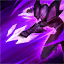

起手裝備
 長劍
長劍
由殞落／鬼索／臨界點後接魔攻的混搭，改海妖／鬼索／臨界點／颶風／殞落的完整普攻命中特效路線；三件核心和進化次序敘述一併同步。 長劍起手保留；五成裝與獨立二、三級鞋線已分開，未照抄外站 Galeforce 鞋附魔欄。


五件成裝與鞋子分開列示；起手與核心是購買路線，不是額外佔用的成裝欄位。鞋子完成時機仍依對線壓力與回城金錢調整。


致命節奏、兇蠻、斷切、血脈、骨甲維持，符合新預設的持續普攻路線，不將魔攻消耗符文混入。


預設閃現＋鬼步，配合普攻命中特效與電漿魔法爆發維持輸出距離；自身位移仍要分段保留。選角時若對方爆發與控制過多，可把鬼步換光盾，連招不得假設同時擁有兩者。
加點優先：Q > E > W
Q > E > W：一技先滿打孤立目標，三技次滿提高普攻窗口；完成裝備後按遊戲提示依序優先進化 Q、E、W，非電腦版屬性門檻。
普攻及友軍控場協助疊加電漿；透過購買道具取得基礎技能進化，依遊戲內進化提示選擇。
有後續版本調整的項目以較新數值為準；未列出者不代表完整技能成長表。
向附近敵人發射多枚飛彈，單一目標可吃到多發；進化後飛彈數增加。
發射長距離虛空能量，造成魔法傷害並疊加電漿、揭露目標；進化後命中可大幅返還冷卻。
有後續版本調整的項目以較新數值為準；未列出者不代表完整技能成長表。

充能期間提高跑速且暫時不能普攻，充能結束後獲得攻速；進化後充能時可短暫隱形。依當前遊戲提示取得進化，不套用電腦版攻速門檻。
有後續版本調整的項目以較新數值為準；未列出者不代表完整技能成長表。
高速突進到帶有電漿標記的敵方英雄附近並獲得護盾，用於追擊、躲技能與調整輸出位置。
有後續版本調整的項目以較新數值為準；未列出者不代表完整技能成長表。
保留手機版完整裝備取得進化與友軍控制協助電漿；三技跑速在充能期間、攻速在充能後，修正原本先蓄力才加跑速的時序。
普攻疊電漿 → 1技魔雨 → 普攻 → 2技疊層 → 普攻引爆電漿
目標遠離士兵時一技能會集中命中，配合普攻與二技快速疊滿電漿；不要在兵線密集時期待完整單體爆發。
2技遠距標記 → 4技突進護盾 → 普攻 → 1技孤立爆發 → 3技加速調位 → 持續輸出
二技命中後先確認敵方控制位置，再用大絕選擇安全落點；大絕可落在目標周圍不同方向，不必直接貼臉。
3技隱身調位 → 普攻疊層 → 1技爆發 → 普攻 → 4技躲技能 → 引爆電漿
進化三技用來中斷敵方鎖定並換角度，大絕留作第二次調位或吸收爆發，避免一開始就把兩個保命手段同時交掉。
完成第一個符合條件的完整裝備後，飛彈數量提升，單體爆發大幅成長。
提供更強的機動與隱形調位，團戰生存力明顯提升。
額外增加電漿層數並降低命中後冷卻，偏向後續完整進化。
凱莎普攻射程偏短，前期以補刀與等待輔助控制為主。敵方英雄與士兵分開時，再用伊卡西亞魔雨打出較高單體傷害；友軍硬控能協助疊加電漿，看到控制命中後要立即跟上普攻與虛空探索者。
海妖殺手、鬼索、臨界點逐步成形，以進化一技打孤立目標、進化三技調位，之後颶風和殞落補普攻輸出。鬼步用於維持電漿連擊，大絕先判斷落點是否安全，不見標記就飛入後排。
團戰先跟在前排後方疊加電漿，只有敵方關鍵控制已交、後排被標記且落單時，才考慮大絕切入。進場後用進化三技隱形重新拉開距離，優先確保自己能完成第二輪技能與普攻，而不是一次全押。
尤娜拉與艾希能在較安全距離限制普攻，煞蜜拉會擋一、二技投射物；等輔助控制疊電漿再接近，保留三技與大絕分段退場。 威脅名單採同分路指南，較有利名單保留機制判斷並移除與威脅名單重疊者；現有輔助組合逐項複核技能互動後保留。
對局名單是機制與分路判斷，不代表固定勝率；需同時看雙方熟練度、兵線與陣容。
尤娜拉與艾希能在較安全距離限制普攻，煞蜜拉會擋一、二技投射物；等輔助控制疊電漿再接近，保留三技與大絕分段退場。
下列輔助配合以技能互動為依據。納帝魯斯、雷歐娜、銳兒仍可配合本頁打法；先確認對手輔助的控制與兩邊召喚師技能，單一射手對局不代表必勝。
每段硬控都能協助疊加電漿，讓凱莎快速接大絕進場。
多段控制能快速疊滿電漿，適合前期強打與中期鎖定後排。
範圍開戰能同時標記多人，替凱莎創造安全的大絕落點。
依凱莎的普攻命中特效與電漿魔法爆發路線選擇替換；先看實際死亡與傷害不足原因。
依敵方前排成形調整
觸發：敵方前排已形成高生命或高防禦，正面輸出受阻。
凱莎保留前述五成裝加獨立鞋線；同一格不同情境擇一替換，不全部加購。
臨界點已提供物理與魔法穿透；不用另一件百分比穿甲硬疊。
保命格可提早
觸發：被同一輪突進秒殺，無法打出主要技能與普攻。
殞落王者之劍 → 守護天使
主要死亡原因是刺客或突進一次切入，且隊友能掩護復活位置。
殞落王者之劍整格換守護天使，犧牲部分普攻命中特效與電漿魔法爆發或持續防禦；復活後無人接應時先改善站位。
殞落王者之劍 → 魔提斯深淵
敵方主要擊殺來源是魔法爆發，且尚未裝另一件生命線裝備。
以殞落王者之劍換魔提斯處理魔法爆發；不把魔防誤當通用抗物理方案。
復活與魔法生命線處理的傷害不同，按實際威脅擇一；盾弓與魔提斯不重複保留。
先判斷控制能否解除
觸發：可解除的禁錮、暈眩等控制反覆中斷輸出。
殞落王者之劍 → 水星彎刀
可解除的控制反覆讓自己無法輸出，且閃現不能解決。
以殞落王者之劍換水星彎刀；主動要手動使用，不能解除擊飛或擊退，也不是舊版附魔。
水星彎刀是成裝，不佔鞋子升級；擊飛、擊退須靠預先走位或隊友保護。
治療已影響集火時
觸發：敵方持續治療抵銷集火，且團隊缺乏穩定重創。
臨界點 → 致死宣告
敵方持續治療難以處理，而且隊友無法負責重創。
整格替換臨界點，會失去魔穿、攻速與疊層雙防；先考慮由隊友補重創，不把此替換視為無代價。
需要時先用死刑宣告過渡；不要把所有敵方英雄都當成必出重創的理由。
團隊無其他反盾者才承擔
觸發：大量反覆護盾持續阻止集火，且自己能穩定命中目標。
殞落王者之劍 → 巨蛇鋒牙
隊友無法施加反盾，且護盾確實抵銷主要輸出。
殞落王者之劍換巨蛇鋒牙會犧牲原末段功能；凱莎仍需保留主要輸出核心，只有單一小護盾時不換。
反盾屬團隊分工，不為一個小盾放棄整條普攻或技能路線。
7.3c差異核對：7.3c直接平衡項目屬符文大亂鬥；本頁保留已核對的峽谷配置。版本更新不等於每位英雄都必須更換Tier或裝備。查看整輪校正範圍。
本頁校正版本：7.3c；校正日期：2026-10-25。
參考來源標示版本：7.3c
本輪核對官方版本差異、道具/符文引用、五成裝與鞋線、逐級加點及情境替換一致性。Tier及玩法屬本站編輯判斷，不是官方排名或台服勝率；未公開的全級技能表不推算。
評級理由：7.3c 維持 A（本站判斷）。同分路參考維持 A；電漿與進化提供中後期能力，但不能把可突進等同適合第一個進場。 7.3c 未改動此分路的英雄數值，沒有新證據只因版本號而升降。
Riot 官方資料 ↗ · Riot 官方資料 ↗ · Riot 官方資料 ↗ · Riot 官方資料 ↗ · Riot 官方資料 ↗ · WildRiftFire 參考攻略 ↗
7.3c 的直接英雄倍率改動屬符文大亂鬥；本召喚峽谷配置承接 7.3b。未把模式專屬增削轉為峽谷增削。
五件成裝、獨立鞋線、起手、核心、情境替換引用與一般符文列別均重新檢查；移除裝備不列入當前推薦。
歷史資料有後續調整時，以較新版本數值為準。
| 項目 | 調整前 | 調整後 |
|---|---|---|
| 基礎物攻 | 62 | 59 |
| 項目 | 調整前 | 調整後 |
|---|---|---|
| 電漿傷害 | 4.5 + 0.5 ×等級+ 15%魔攻 | 4 + 1 ×等級+ 12%魔攻+當前電漿層數× (1 + 0.2 ×等級+ 2%魔攻) |
| 已損失生命傷害 | (15 + 2.5%魔攻)% | (15 + 5%魔攻)% |
| 項目 | 調整前 | 調整後 |
|---|---|---|
| 傷害 | 30 / 60 / 90 / 120 + 110%物攻+ 60%魔攻 | 30 / 60 / 90 / 120 + 130%物攻+ 50%魔攻 |
| 項目 | 調整前 | 調整後 |
|---|---|---|
| 跑速 | 50% / 55% / 60% / 65% + 80% ×道具攻速× 50% / 55% / 60% / 65%（道具攻速上限為90% / 99% / 108% / 117%） | 50% / 55% / 60% / 65% + 額外攻速 * 50% / 55% / 60% / 65%（上限為100% / 110% / 120% / 130%） |
| 項目 | 調整前 | 調整後 |
|---|---|---|
| 護盾 | 75 / 100 / 125 + 100 / 150 / 200%物攻+ 75%魔攻 | 100 / 125 / 150 + 80 / 120 / 160%物攻+ 100%魔攻 |